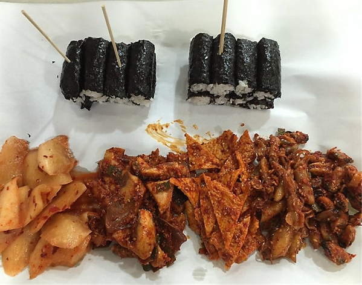

Food
마! 통영 충무김밥 한 번 무봐라!
충무김밥은 다른 김밥과 다르게 속에 반찬을 넣지 않는 것이 특징인데 매운 오징어, 어묵볶음, 깍두기를 곁들어 먹는다. 정말 심플한 김밥이 아닐까? 하지만 맛은 심플하지 않다. 정말 "어떻게 이런 맛이 나지?" 하는 의문점이 들게된다.
⭐️⭐️⭐️⭐️
꿀팁 : 오징어,어묵,깍두기의 삼합은 손을 멈출 수가 없는 존맛탱!
View
남해 양떼목장 양마르뜨 언덕
양마르뜨 언덕에 가면~ 양도 있고~ 보더콜리 있고~ 염소도 있고~ 조랑말도 있고~

⭐️⭐️⭐️⭐️
동물을 좋아한다면 무적권 추천드려요! 먹이체험도 할 수 있고, 가까이서 양들을 보고 탁 트인 언덕을 보면 완전 힐링!!
체험내용
양몰이 관람, 양 먹이주기, 원반던지기
입장료 안내 ( 양먹이, 주차, 체험 포함가 )
대인 ( 중학생~ ) : 4,000원 소인 ( 36개월~ ) 3,000원
이용시간
매일 10:00 - 18:00 평일 5시까지
우천 시 휴무
문의 전화 : 055) 867-4488
Landmark
영화 `소년, 천국에 가다`와 드라마 `봄의 왈츠` 촬영지를 아시나요?
저는 이곳을 보자마자 영화의 한장면 같은 느낌을 받았는데 정말 영화와 드라마 촬영지였어요!! 바로 "경화역"인데요! 1박 2일에서도 등장했답니다!
⭐️⭐️⭐️⭐️⭐️
예쁜 조형물과 아기자기한 기차역은 데이트 장소로 제격, 인생샷을 자동으로 찍게해줄 예쁜 배경은 덤! 예쁘고 아기자기한 기차역을 보고 싶다면? #경화역#데이트#솔로는#서러워
문의 전화 : 1544-7788